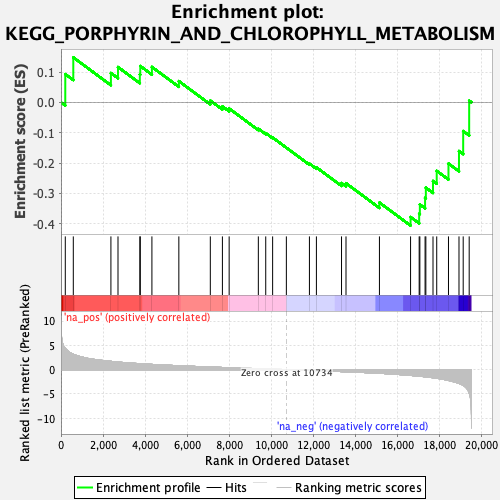

| | | Dataset | PFS |
| Phenotype | NoPhenotypeAvailable |
| Upregulated in class | na_neg |
| GeneSet | KEGG_PORPHYRIN_AND_CHLOROPHYLL_METABOLISM |
| Enrichment Score (ES) | -0.4058621 |
| Normalized Enrichment Score (NES) | -1.3315082 |
| Nominal p-value | 0.07857143 |
| FDR q-value | 0.6752226 |
| FWER p-Value | 0.994 |
Table: GSEA Results Summary

Fig 1: Enrichment plot: KEGG_PORPHYRIN_AND_CHLOROPHYLL_METABOLISM
Profile of the Running ES Score & Positions of GeneSet Members on the Rank Ordered List
| SYMBOL | RANK IN GENE LIST | RANK METRIC SCORE | RUNNING ES | CORE ENRICHMENT | | 1 | HMOX2 | 204 | 4.359 | 0.0931 | No |
| 2 | UGT2B7 | 585 | 3.139 | 0.1481 | No |
| 3 | UGT2A3 | 2374 | 1.697 | 0.0967 | No |
| 4 | PPOX | 2711 | 1.554 | 0.1164 | No |
| 5 | ALAD | 3750 | 1.215 | 0.0920 | No |
| 6 | HMOX1 | 3771 | 1.211 | 0.1197 | No |
| 7 | CPOX | 4324 | 1.068 | 0.1168 | No |
| 8 | FECH | 5605 | 0.794 | 0.0700 | No |
| 9 | COX10 | 7102 | 0.533 | 0.0059 | No |
| 10 | EARS2 | 7677 | 0.440 | -0.0131 | No |
| 11 | CP | 7998 | 0.392 | -0.0202 | No |
| 12 | FTH1 | 9386 | 0.195 | -0.0867 | No |
| 13 | BLVRA | 9738 | 0.141 | -0.1014 | No |
| 14 | UROS | 10066 | 0.094 | -0.1159 | No |
| 15 | UROD | 10719 | 0.003 | -0.1493 | No |
| 16 | ALAS1 | 11816 | -0.153 | -0.2019 | No |
| 17 | UGT2B4 | 12148 | -0.204 | -0.2140 | No |
| 18 | MMAB | 13343 | -0.400 | -0.2657 | No |
| 19 | ALAS2 | 13556 | -0.434 | -0.2663 | No |
| 20 | UGT2B15 | 15146 | -0.752 | -0.3299 | No |
| 21 | COX15 | 16627 | -1.187 | -0.3777 | Yes |
| 22 | BLVRB | 17036 | -1.341 | -0.3668 | Yes |
| 23 | HCCS | 17069 | -1.349 | -0.3364 | Yes |
| 24 | UGT2B11 | 17317 | -1.462 | -0.3143 | Yes |
| 25 | FTMT | 17354 | -1.480 | -0.2810 | Yes |
| 26 | GUSB | 17694 | -1.666 | -0.2589 | Yes |
| 27 | UGT2B28 | 17871 | -1.777 | -0.2257 | Yes |
| 28 | UGT2B10 | 18430 | -2.224 | -0.2015 | Yes |
| 29 | HMBS | 18930 | -2.814 | -0.1603 | Yes |
| 30 | UGT2B17 | 19130 | -3.201 | -0.0944 | Yes |
| 31 | UGT1A1 | 19415 | -4.825 | 0.0056 | Yes |
Table: GSEA details [plain text format]
Fig 2: KEGG_PORPHYRIN_AND_CHLOROPHYLL_METABOLISM: Random ES distribution
Gene set null distribution of ES for KEGG_PORPHYRIN_AND_CHLOROPHYLL_METABOLISM